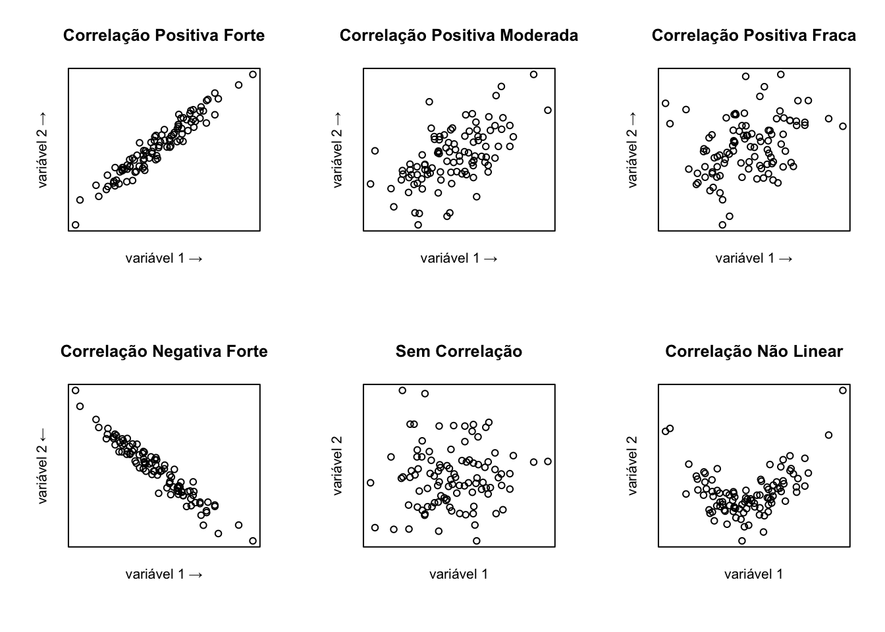
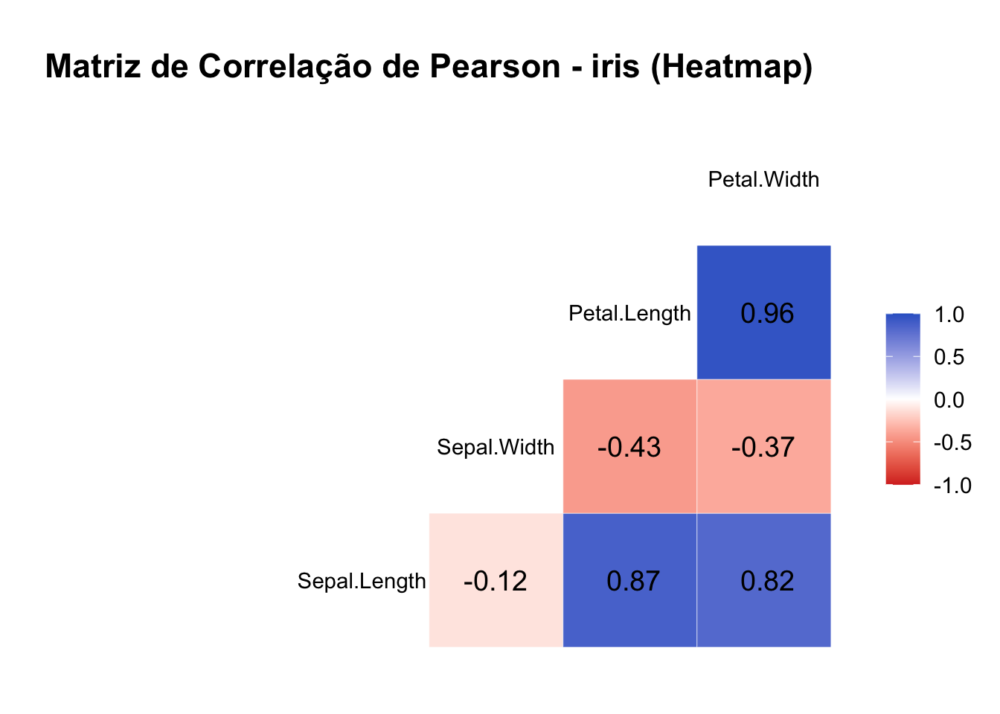
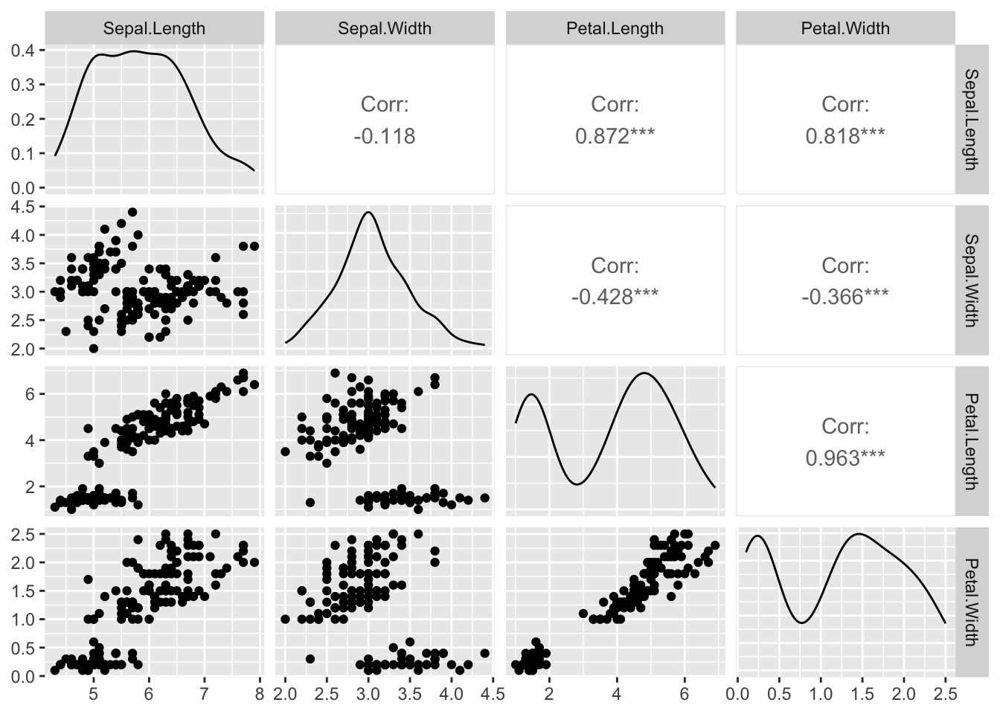
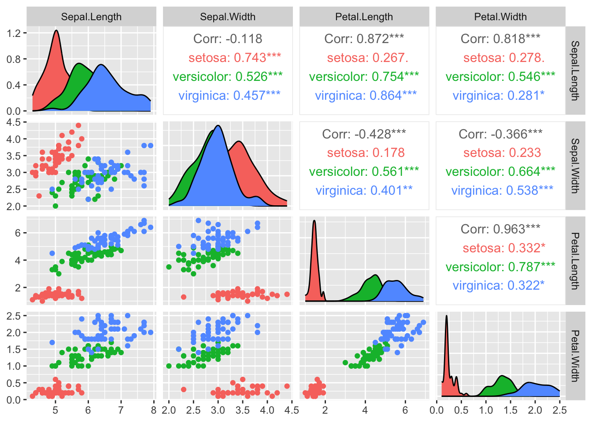

Capítulo 21 Correlação
Correlação é uma medida estatística que expressa a intensidade e a direção da relação entre duas variáveis. No caso do coeficiente de Pearson, ela mede a relação linear.
21.1 Tipos de Variáveis
Para analisar correlação, usamos variáveis numéricas (quantitativas ou qualitativas ordinais). Quando as variáveis são qualitativas ordinais (por exemplo, escala Likert), geralmente usamos métodos não paramétricos como Spearman ou Kendall, que funcionam bem mesmo sem normalidade ou relação linear.
21.2 Diagrama de Dispersão
Gráfico que permite visualizar a relação entre duas variáveis. A seguir, exemplos de diferentes padrões de correlação:

21.3 Coeficientes de Correlação
21.3.1 Coeficiente de Correlação de Pearson
O coeficiente de correlação de Pearson (\(r\)) é utilizado quando se deseja avaliar a relação linear entre duas variáveis quantitativas contínuas. Ele pressupõe que os dados de ambas as variáveis seguem uma distribuição normal (ou aproximadamente normal) e que a relação entre elas é linear, ou seja, uma linha reta pode descrever bem o padrão dos dados em um gráfico de dispersão. É sensível a outliers.
21.3.2 Coeficiente de Correlação de Spearman
O coeficiente de Spearman (\(\rho\)) avalia a força e a direção da associação entre duas variáveis com base em seus ranks (postos) em vez dos valores originais. Ele é indicado quando a relação entre as variáveis é monotônica, ou seja, conforme uma variável aumenta, a outra também aumenta ou diminui, mas não necessariamente de maneira linear. O Spearman é apropriado para dados que não seguem a normalidade ou para situações em que a relação não pode ser descrita por uma linha reta. Além disso, é menos sensível a outliers do que o Pearson.
21.3.3 Coeficiente de Correlação de Kendall
O coeficiente de Kendall (\(\tau\)) também se baseia nos postos dos dados, sendo utilizado para medir a força da associação entre duas variáveis. É especialmente útil em situações com pequenas amostras ou quando há muitos empates nos valores dos dados (valores iguais). Assim como o Spearman, o Kendall não exige normalidade dos dados e é apropriado para relações monotônicas. Em geral, o tau de Kendall é visto como mais robusto em amostras pequenas ou com muitos empates.
21.3.4 Interpretação dos Coeficientes
O valor a correlação varia de -1 (correlação negativa perfeita) a +1 (correlação positiva perfeita), sendo 0 a ausência de correlação linear.
| Faixa de valores | Interpretação |
|---|---|
| 0,00 – 0,10 | Desprezível |
| 0,10 – 0,30 | Fraca |
| 0,30 – 0,50 | Moderada |
| 0,50 – 0,70 | Forte |
| 0,70 – 1,00 | Muito forte |
21.3.5 Exemplo no R
Vamos supor que temos os dados de 18 alunos: a quantidade de aulas frequentadas (de um total de 20) e suas notas finais na disciplina de Estatística (de 0 a 10).
# Vetor de presenças (número de aulas frequentadas)
presencas <- c(20, 18, 17, 19, 15, 16, 20, 18, 17, 19, 14, 15, 12, 16, 20, 13, 17, 18)
# Vetor de notas finais em Estatística
notas <- c(9.8, 9.0, 8.5, 9.5, 7.0, 7.5, 10.0, 8.7, 8.0, 9.2, 6.5, 7.2, 5.0, 7.8, 9.7, 6.0, 8.2, 8.8)## [1] 0.992563## [1] 0.9922299## [1] 0.9599837# Dica: dá para abreviar o nome de cada método
# Para calcular o r de Pearson
cor(presencas, notas, method = "p")## [1] 0.992563## [1] 0.9922299## [1] 0.959983721.4 Testes de Correlação
21.4.1 Pearson
- H0: \(r = 0\) (não há correlação linear entre as variáveis “x” e “y”)
- H1: \(r \neq 0\) (existe correlação)
##
## Pearson's product-moment correlation
##
## data: iris$Sepal.Length and iris$Petal.Length
## t = 21.646, df = 148, p-value < 2.2e-16
## alternative hypothesis: true correlation is not equal to 0
## 95 percent confidence interval:
## 0.8270363 0.9055080
## sample estimates:
## cor
## 0.871753821.4.2 Spearman
- H0: \(\rho = 0\) (não há correlação entre as variáveis “x” e “y”)
- H1: \(\rho \neq 0\) (existe correlação)
## Warning in cor.test.default(iris$Sepal.Length, iris$Petal.Length, method =
## "spearman"): Cannot compute exact p-value with ties##
## Spearman's rank correlation rho
##
## data: iris$Sepal.Length and iris$Petal.Length
## S = 66429, p-value < 2.2e-16
## alternative hypothesis: true rho is not equal to 0
## sample estimates:
## rho
## 0.881898121.4.3 Kendall
- H0: \(\tau = 0\) (não há correlação entre as variáveis “x” e “y”)
- H1: \(\tau \neq 0\) (existe correlação)
##
## Kendall's rank correlation tau
##
## data: iris$Sepal.Length and iris$Petal.Length
## z = 12.647, p-value < 2.2e-16
## alternative hypothesis: true tau is not equal to 0
## sample estimates:
## tau
## 0.718515921.5 Tamanho do Efeito (Effect Size)
Em estudos de correlação, o tamanho do efeito é representado pelo valor absoluto do coeficiente de correlação (por exemplo, Pearson, Spearman ou Kendall). Isso significa que consideramos apenas a intensidade da relação entre as variáveis, independentemente de ser positiva ou negativa.
Por exemplo, tanto um coeficiente de +0,65 quanto de -0,65 indicam um tamanho de efeito de 0,65. Quanto mais próximo de 1 (ou -1), mais forte é a correlação; quanto mais próximo de 0, mais fraca.
21.6 Cálculo do Tamanho da Amostra e Poder Estatístico
21.7 Outros recursos
Para explorar um pouco mais o estudo de correlação, vamos usar o banco de dados iris, que já vem instalado por padrão no R.
O dataset iris é um conjunto de dados clássico em estatística e aprendizado de máquina (machine learning). Ele contém 150 observações de flores de íris de três espécies diferentes: setosa, versicolor e virginica. As variáveis numéricas são:
Sepal.Length: comprimento da sépala (em centímetros), a sépala é a parte externa da flor, que protege os botões florais.
Sepal.Width: largura da sépala (em centímetros).
Petal.Length: comprimento da pétala (em centímetros), as pétalas são as partes geralmente coloridas da flor.
Petal.Width: largura da pétala (em centímetros).
Estas medidas são úteis para estudar relações entre características morfológicas das flores.
21.7.1 Visualização com pairs()
A função pairs() mostra uma matriz de gráficos de dispersão, útil para observar visualmente correlações entre todas as variáveis numéricas.

A função pairs no R gera uma matriz de gráficos de dispersão mostrando a relação entre todas as variáveis numéricas de um conjunto de dados. Cada gráfico da matriz compara duas variáveis diferentes:
- Cada linha e cada coluna representam uma variável.
- Os gráficos mostram como cada variável se relaciona com as outras: por exemplo, a relação entre Sepal.Length e Petal.Length.
- Quando os pontos formam uma linha inclinada, isso indica uma correlação (positiva ou negativa) entre as variáveis.
- Se os pontos estão espalhados, sem padrão, indica pouca ou nenhuma relação.
- A diagonal mostra o nome de cada variável.
Assim, ao olhar para a matriz, você consegue visualizar rapidamente quais variáveis têm relação entre si e qual é o tipo dessa relação (mais forte, mais fraca, positiva ou negativa).
21.7.2 Matriz de Correlação com cor()
A função cor() calcula a matriz de correlação entre variáveis numéricas. A seguir, uma matriz com correlação de Pearson:
# use o método adequado method = "pearson"; method = "spearman" ou method = "kendall"
cor(iris[, 1:4], method = "pearson")## Sepal.Length Sepal.Width Petal.Length Petal.Width
## Sepal.Length 1.0000000 -0.1175698 0.8717538 0.8179411
## Sepal.Width -0.1175698 1.0000000 -0.4284401 -0.3661259
## Petal.Length 0.8717538 -0.4284401 1.0000000 0.9628654
## Petal.Width 0.8179411 -0.3661259 0.9628654 1.0000000A matriz de correlação é uma tabela que mostra os coeficientes de correlação entre todas as combinações possíveis de variáveis numéricas em um conjunto de dados. Cada valor da matriz indica o grau de associação linear entre um par de variáveis. A diagonal principal sempre apresenta o valor 1, pois cada variável é perfeitamente correlacionada com ela mesma. Assim, a matriz de correlação permite identificar rapidamente quais variáveis estão mais relacionadas entre si, facilitando a análise exploratória dos dados. Observe que essa matriz é simétrica
21.7.3 Matriz Visual com GGally::ggcorr()
O ggcorr() do pacote GGally mostra graficamente os coeficientes de correlação, com intensidade e direção representadas por cor.
# Instale os pacotes se necessário:
# install.packages("GGally")
# install.packages("ggplot2")
library(GGally)
library(ggplot2)
# Matriz de correlação tipo heatmap com valores destacados
ggcorr(
data = iris[, 1:4],
method = c("everything", "pearson"), # calcula todas as correlações de Pearson
label = TRUE, # mostra os coeficientes nas células
label_round = 2, # arredonda os valores para 2 casas decimais
label_size = 5, # tamanho do texto dos coeficientes
hjust = 0.5, # centraliza os rótulos nas células
layout.exp = 2, # expande o tamanho das células
low = "#D73027", # cor para correlação negativa forte
mid = "white", # cor para correlação nula
high = "#3366CC" # cor para correlação positiva forte
) +
ggtitle("Matriz de Correlação de Pearson - iris (Heatmap)") +
theme_minimal(base_size = 14) + # visual minimalista e tamanho de fonte maior
theme(
plot.title = element_text(hjust = 0.5, face = "bold"), # centraliza e destaca o título
axis.text.x = element_text(angle = 45, vjust = 1, hjust = 1) # gira rótulos do eixo x para melhor leitura
)
A função ggpairs() combina histogramas, correlações e gráficos de dispersão em uma visualização integrada.
Este comando cria uma matriz de gráficos que facilita visualizar a distribuição e a relação entre as variáveis numéricas do conjunto. É muito útil para identificar padrões, tendências, outliers e possíveis correlações antes de uma análise estatística mais aprofundada.
- Considerando todos os dados:

- Considerando as categorias de especies (variável Species)

O que a figura mostra?
Esta figura é uma matriz de gráficos de pares (pairs) das variáveis numéricas do conjunto de dados, nesse caso, Sepal.Length, Sepal.Width, Petal.Length e Petal.Width.
Diagonal principal: exibe a distribuição de cada variável individualmente, usando histogramas ou curvas de densidade. Quando os dados estão divididos por categoria (como diferentes espécies no exemplo do iris), cada cor representa uma categoria distinta, permitindo visualizar e comparar facilmente como os valores da variável se distribuem em cada grupo.
Abaixo da diagonal: mostra gráficos de dispersão, permitindo observar visualmente as relações entre os pares de variáveis para cada espécie.
Acima da diagonal: apresenta os coeficientes de correlação para cada par de variáveis:
- O valor principal (exemplo: Corr: 0.872***) corresponde à correlação considerando todas as espécies juntas.
- Abaixo, aparecem as correlações por espécie:
- setosa (vermelho)
- versicolor (verde)
- virginica (azul)
- Os valores são coloridos conforme a espécie correspondente.
Sobre os asteriscos: os asteriscos após os valores de correlação indicam o nível de significância estatística do coeficiente calculado, ou seja, quão provável é que a correlação observada seja diferente de zero apenas pelo acaso. A convenção usual é:
*: p < 0,05**: p < 0,01***: p < 0,001Sem asteriscos: correlação não significativa